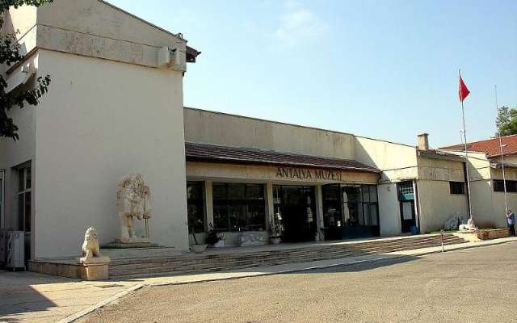
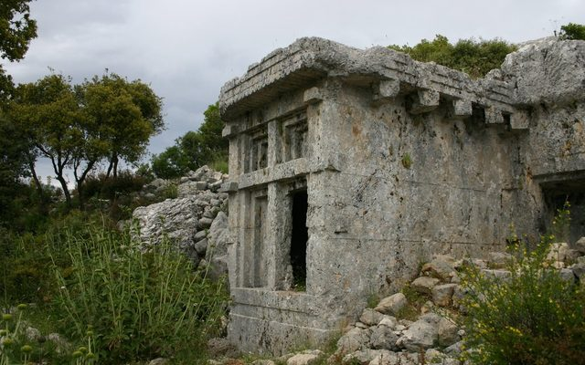
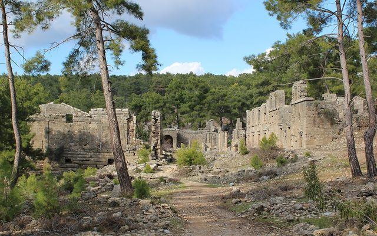
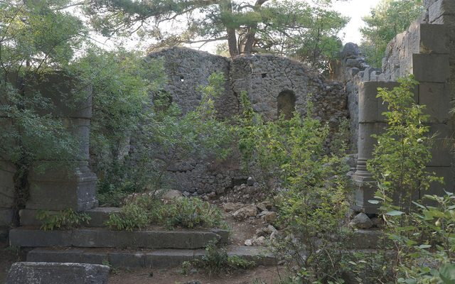
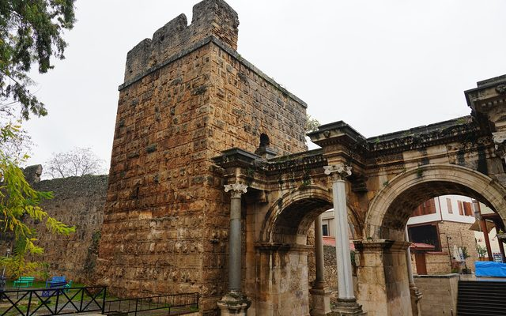

Kültür Varlıkları ガイドにはアンタルヤの75か所が載っています：48 遺跡, 11 博物館, 6 城・歴史的建造物, 3 滝, 3 渓谷, 2 自然景勝地, 1 宗教建築, 1 ハイキングコース。以下に注目スポット、地図、全リストを掲載しています。
⭐ 注目スポット

1 · アンタルヤ · 遺跡クサントス遺跡
クサントスはリュキアで最も重要な都市で、長くその行政の中心でした。エシェン渓谷を見下ろす斜面にあり、自由を愛する人々で知られています。古代の記録によれば、クサントスの人々は降伏するよりも二度にわたり自らの街を焼いたといいます。ハルピュイアの墓や、知られている中で最も長いリュキア語文を刻んだ碑文柱など、リュキア独特の柱墓を見ることができま…

2 · アンタルヤ · 博物館アンタルヤ博物館
アンタルヤ博物館は、パンフィリア、リュキア、ピシディアの至宝を集めた、トルコで最も充実した考古学博物館のひとつです。見学はカライン洞窟の先史時代の出土品から始まり、大理石が生きているかのようなペルゲの神々と皇帝の展示室へと続きます。見どころは「疲れたヘラクレス」で、長い間別々の国に分かれていた上半身と下半身が再びひとつになりました。豊か…

3 · アンタルヤ · 遺跡アスペンドス
キョプリュチャイ川（古代のエウリュメドン川）沿いのアスペンドスには、古代世界で最も保存状態の良い劇場のひとつがあります。紀元2世紀、マルクス・アウレリウス帝の時代に建築家ゼノンが建てたもので、舞台建物はほぼ完全に残り、約1万5千席の音響は今も人々を驚かせます。セルジューク朝の時代には一時期隊商宿として使われ、現在はアスペンドス・オペラ・…
🗺 地図
📍 すべてのスポット (75)
遺跡 (48)
クサントス遺跡遺跡 · UNESCOアスペンドス遺跡 パタラ遺跡遺跡
パタラ遺跡遺跡 ペルゲ遺跡遺跡
ペルゲ遺跡遺跡 シデ遺跡遺跡
シデ遺跡遺跡 アンタルヤ・シエドラ古代都市遺跡
アンタルヤ・シエドラ古代都市遺跡 アンティオキア・アド・クラグム古代都市遺跡
アンティオキア・アド・クラグム古代都市遺跡 アンティフェロス古代劇場（カシュ）遺跡
アンティフェロス古代劇場（カシュ）遺跡 アペルライ古代都市遺跡
アペルライ古代都市遺跡 アポロニア（リュキア）古代都市遺跡
アポロニア（リュキア）古代都市遺跡 アリアッソス古代都市遺跡
アリアッソス古代都市遺跡 アリカンダ遺跡遺跡
アリカンダ遺跡遺跡 イデベッソス古代都市遺跡
イデベッソス古代都市遺跡 イオタペ古代都市遺跡
イオタペ古代都市遺跡 ケコヴァの沈んだ都市遺跡
ケコヴァの沈んだ都市遺跡 キタナウラ古代都市遺跡
キタナウラ古代都市遺跡 キュアネアイ古代都市遺跡
キュアネアイ古代都市遺跡 リュキア文明博物館とアンドリアケ遺跡遺跡
リュキア文明博物館とアンドリアケ遺跡遺跡 リミラ遺跡遺跡
リミラ遺跡遺跡 ミュラ遺跡遺跡
ミュラ遺跡遺跡 オリンポス遺跡遺跡
オリンポス遺跡遺跡 ファセリス遺跡遺跡
ファセリス遺跡遺跡
フェロス古代都市遺跡 ロディアポリス古代都市遺跡
ロディアポリス古代都市遺跡 セベダ古代都市遺跡
セベダ古代都市遺跡
セレウケイア（パンフィリア）古代都市遺跡 セルゲ古代都市遺跡
セルゲ古代都市遺跡 セリヌス古代都市遺跡
セリヌス古代都市遺跡 シッリオン古代都市遺跡
シッリオン古代都市遺跡 シメナ遺跡遺跡
シメナ遺跡遺跡 スラ古代都市遺跡
スラ古代都市遺跡 テイミウッサ古代都市遺跡
テイミウッサ古代都市遺跡 テルメッソス遺跡遺跡
テルメッソス遺跡遺跡
トレベンナ古代都市遺跡 トリュサ古代都市遺跡
トリュサ古代都市遺跡 ティベリッソス古代都市遺跡
ティベリッソス古代都市遺跡 オキュズイニ洞窟遺跡アカリッソス古代都市遺跡アルネアイ古代都市遺跡ベルディビ洞窟遺跡エテンナ古代都市遺跡ガガイ古代都市遺跡イシンダ古代都市遺跡カンデュバ古代都市遺跡コリュダッラ古代都市遺跡ラモス古代都市遺跡ペドネリッソス古代都市遺跡イデュロス古代都市遺跡
オキュズイニ洞窟遺跡アカリッソス古代都市遺跡アルネアイ古代都市遺跡ベルディビ洞窟遺跡エテンナ古代都市遺跡ガガイ古代都市遺跡イシンダ古代都市遺跡カンデュバ古代都市遺跡コリュダッラ古代都市遺跡ラモス古代都市遺跡ペドネリッソス古代都市遺跡イデュロス古代都市遺跡博物館 (11)
アンタルヤ博物館博物館 アランヤ博物館博物館
アランヤ博物館博物館 アンタルヤ・アタテュルクの家博物館博物館
アンタルヤ・アタテュルクの家博物館博物館 アンタルヤ民俗学博物館博物館
アンタルヤ民俗学博物館博物館 アンタルヤおもちゃ博物館博物館
アンタルヤおもちゃ博物館博物館 聖ニコラオス記念博物館博物館
聖ニコラオス記念博物館博物館 シデ博物館博物館アランヤ・アタテュルクの家博物館博物館アンタルヤ・ネクロポリス博物館博物館エルマル博物館博物館メヴレヴィー修道場博物館博物館
シデ博物館博物館アランヤ・アタテュルクの家博物館博物館アンタルヤ・ネクロポリス博物館博物館エルマル博物館博物館メヴレヴィー修道場博物館博物館
アランヤ博物館博物館アンタルヤ・アタテュルクの家博物館博物館アンタルヤ民俗学博物館博物館アンタルヤおもちゃ博物館博物館聖ニコラオス記念博物館博物館シデ博物館博物館アランヤ・アタテュルクの家博物館博物館アンタルヤ・ネクロポリス博物館博物館エルマル博物館博物館メヴレヴィー修道場博物館博物館城・歴史的建造物 (6)
 アランヤ城城・歴史的建造物
アランヤ城城・歴史的建造物 アララハン城・歴史的建造物
アララハン城・歴史的建造物
ハドリアヌス門城・歴史的建造物 キョプリュパザル（アスペンドス）橋城・歴史的建造物
キョプリュパザル（アスペンドス）橋城・歴史的建造物 クズル・クレ（赤い塔）城・歴史的建造物
クズル・クレ（赤い塔）城・歴史的建造物 シャラプサ・ハン城・歴史的建造物
シャラプサ・ハン城・歴史的建造物